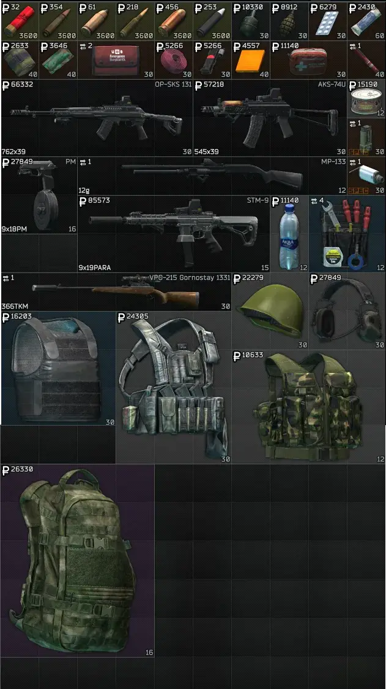
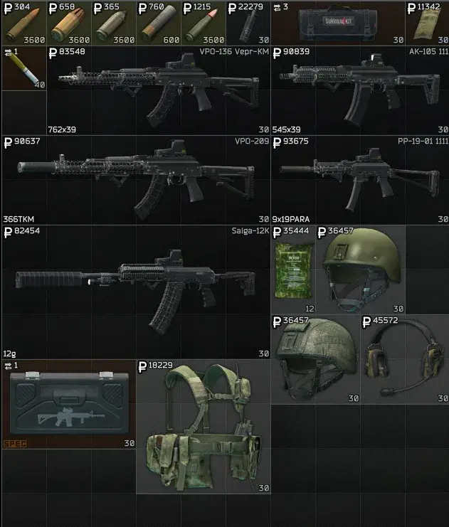
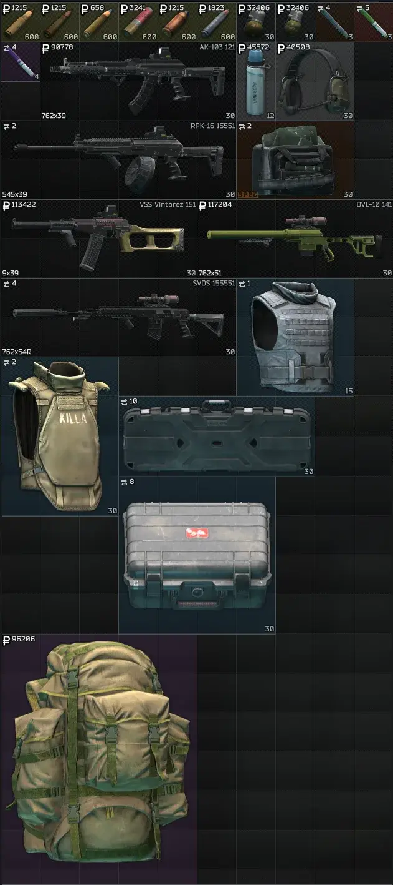
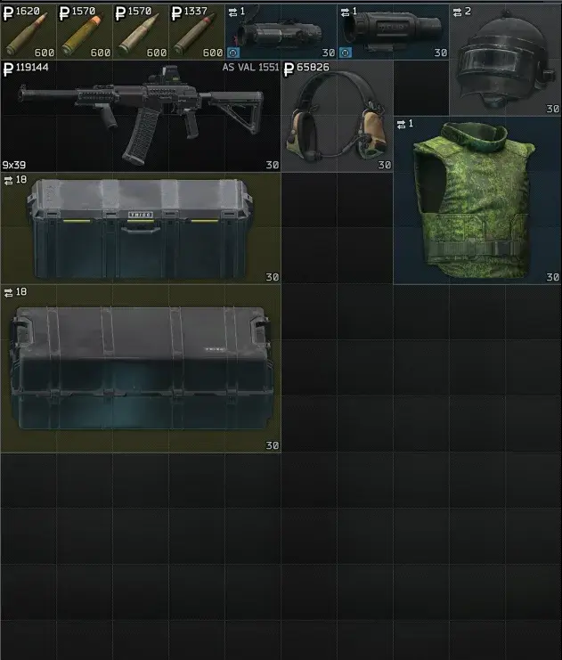

YetAnotherTraderMod
- Downloads
- 5,924
- Favourites
- 9
- Mod lists
- 9
🔧 BETA RELEASE 🔧
Yet Another Trader Mod is still in development. Inventory, balance, barter rolls, custom weapons, insurance, quests, side content, and unlocks may change between versions.
Feedback, bug reports, balance suggestions, and quest feedback are appreciated.
Yet Another Trader Mod adds Tony Volkov, a custom trader for SPT 4.0.13.
Tony is a former BEAR operator with old Russian underworld connections. Before THE CITY fell apart, he worked as muscle, logistics, and weapons procurement. After the collapse, he became a quiet middleman between ex-PMCs, smugglers, and what is left of the criminal networks moving gear through THE CITY.
Tony is not meant to be a normal shopkeeper.
He is a fixer.
He deals in practical gear, odd trades, tuned weapons, ammo, armor, meds, custom stims, and whatever else his network can move. Cash works, but the right barter can open doors too.
Version: 0.1.0 Beta
Version 0.1.0 Beta is the first larger beta content milestone after 0.0.5.
This update expands Tony from a trader with early systems into a more complete beta experience. It adds new quests, new side content, new weapons, new medical items, new stims, stronger barter behavior, better out-of-stock handling, and several fixes for quest progression and trader systems.
Current highlights include:
- Tony trader across 4 loyalty levels
- Cash and barter purchase support
- Randomized cash/barter offers
- Barter rerolls on trader restock
- Out-of-stock rerolls on trader restock
- Out-of-stock items stay visible with stock set to zero
- Support for always-barter items
- Support for always-in-stock items
- Support for preventing barter offers from going out of stock
- Out-of-stock blacklist support
- Custom tuned weapons based on base-game guns
- Tony-style full-auto and better-stat weapon variants
- New Tony-themed weapons
- Ammo pack handling for barter rolls
- Corrected ammo pack barter pricing
- Limited ammo barter pack stock
- Custom Tony-themed stims
- Custom Tony-themed medical items
- Insurance support with Tony-themed dialogue
- Descending insurance price coefficient by loyalty level
- Repair support
- Questline and side quest content
- Quest-based unlock support
- Config-driven item setup
-
Download the mod archive.
-
Extract the folder into your SPT install:
SPT/user/mods/
- Your install path should look like this:
SPT/user/mods/YetAnotherTraderMod/
-
Launch the SPT server.
-
Launch the game and check your traders. Tony should appear by default.
That’s it. Happy hunting.
YATM includes config files that let you adjust Tony without editing the main mod code.
The main config files are located here:
SPT/user/mods/YetAnotherTraderMod/config/settings.json
SPT/user/mods/YetAnotherTraderMod/config/items.json
Before editing either file:
- Close the SPT server.
- Make a backup of the config file you are changing.
- Edit the values you want to change.
- Save the file.
- Start the SPT server again.
settings.json
settings.json controls Tony’s general trader behavior.
Common settings include:
MinLevel
Controls the minimum player level needed for Tony.
UnlockedByDefault
Controls whether Tony is unlocked by default.
TraderRefreshMin
TraderRefreshMax
Controls Tony’s refresh timer range.
AddTraderToFleaMarket
Controls whether Tony is added to the flea market trader list.
InsurancePriceCoef
Controls Tony’s starting insurance price coefficient.
Tony’s insurance now uses descending loyalty-level pricing. Insurance starts more expensive at lower loyalty levels and becomes cheaper as the player earns higher loyalty with Tony.
RepairQuality
Controls Tony’s repair quality.
RandomizeStockAvailable
Enables or disables random stock availability.
OutOfStockChance
Controls the chance that an item rolls out of stock.
UnlimitedStock
Makes Tony’s stock unlimited when enabled.
PriceMultiplier
Adjusts Tony’s item prices globally.
ForceCashOnly
Forces Tony’s offers to only use cash.
RandomizeCashBarterOffers
Enables or disables randomized cash/barter offers.
CashOfferPercent
Controls how often offers should roll as cash instead of barter.
PreventBarterOffersOutOfStock
Prevents barter offers from being selected by the out-of-stock system.
This helps keep barter-only offers and special trades available when desired.
RerollAssortOnRestock
Allows Tony’s assortment systems to reroll when the trader restocks.
This can reroll cash offers, barter offers, and out-of-stock results on refresh instead of keeping the same roll forever.
items.json
items.json controls Tony’s individual item offers.
This file handles item prices, currencies, cash-only rules, barter schemes, always-barter rules, always-in-stock rules, and ammo barter pack data.
Common item values include:
TplId
The item template ID being sold.
ItemName
The readable item name used for organization.
Price
The cash price of the item.
Currency
The currency used for cash offers, such as RUB.
CashOnly
Controls whether this item should only be sold for cash.
AlwaysBarter
Forces the item to stay as a barter offer when enabled.
This is useful for special trader offers, quest reward unlocks, and items that should never roll into a normal cash purchase.
AlwaysInStock
Prevents the out-of-stock system from removing availability from this item.
This is useful for important utility items, quest-related items, or items that should remain available even when the random stock system is enabled.
BarterScheme
Controls what barter items Tony can ask for.
AmmoBarterPackTplId
The ammo pack template ID used when loose ammo rolls as a barter offer.
AmmoBarterPackItemName
The readable name of the ammo pack.
AmmoBarterPackSize
The number of rounds in the ammo pack.
BarterSchemeValueBasis
Controls how barter value is calculated.
Ammo packs can use pack-based value so the barter is based on bullet price multiplied by pack size.
Ammo Barter Behavior
Ammo has special handling.
When ammo rolls as a cash offer, it can stay as loose ammo.
When ammo rolls as a barter offer, YATM can swap the loose ammo item to its matching ammo pack using the ammo pack data in items.json.
This helps Tony sell ammo in a cleaner way and makes barter values more reasonable for full ammo packs.
In 0.1.0, ammo barter behavior has been improved:
- Ammo pack barter prices now calculate correctly
- Ammo barter pack stock is limited
- Ammo barter values can use bullet price multiplied by pack size
- Ammo barter generation has been updated and rebalanced
Barter and Stock Reroll Behavior
Tony’s barter and out-of-stock systems can now reroll on trader restock.
Depending on your settings, Tony can refresh:
- Which offers roll as cash
- Which offers roll as barter
- Which offers roll out of stock
- Which barter offers stay protected from out-of-stock rolls
This makes Tony’s inventory feel more dynamic while still letting important items and special offers be controlled through config.
Important Notes
Make sure your JSON stays valid.
Do not remove commas, quotes, brackets, or braces unless you know what you are changing.
If Tony does not load correctly after editing a config file, restore your backup and restart the server.
Name: Tony Surname: Volkov Nickname: Tony Location: A back room somewhere under THE CITY.
Description: A streetwise fixer with old BEAR ties and deep underworld connections. Tony trades weapons, ammo, armor, meds, custom stims, medical supplies, and hard-to-find gear. Cash works, but the right barter can open doors too.
Avatar:
- Purchasable gear and consumables across 4 loyalty levels
- Cash purchase support
- Barter trade support
- Random barter offer support
- Barter reroll support on trader restock
- Out-of-stock reroll support on trader restock
- Out-of-stock system that zeroes stock instead of removing items
- Option to prevent barter offers from rolling out of stock
- Out-of-stock blacklist support
- Always-barter item support
- Always-in-stock item support
- Custom tuned weapons based on base-game guns
- Tony-style modified weapons, including full-auto and improved-stat variants
- New Tony-themed weapons
- Ammo pack support for barter offers
- Corrected ammo pack barter pricing
- Limited ammo barter pack stock
- Custom Tony-themed stims
- Custom Tony-themed medical items
- Insurance support
- Descending insurance price coefficient by loyalty level
- Repair support
- Config-driven item setup
- Quest and side quest content
- Quest-based unlock support
LL1
Basic survival gear, early weapons, cheap ammo, simple armor, food, drinks, low-tier meds, and early Tony essentials.
LL2
Improved ammo, better AK parts, stronger armor options, suppressors, weapon parts, side quest unlocks, and more useful mid-game gear.
LL3
Higher-tier weapons, stronger armor, better ammo options, rare items, weapon cases, ammo cases, custom medical items, and more valuable barter offers.
LL4
Tony’s best stock. High-end ammo, tuned weapons, rare armor, exclusive gear, expensive or limited offers, and stronger late-game unlocks.
Preview




New Quests and Side Content
0.1.0 adds several new quests and side quests to Tony’s progression.
New quest content added in 0.1.0 includes:
- Broken Radios
- Paper Shields
- Clean Run
- Red Caliber
- Street Clinic
- Used But Usable
These quests continue building Tony as more than just a trader. His progression now leans further into fixer work, supply recovery, medical connections, weapon access, and side-content unlocks.
Tony’s full implemented questline now runs through Used But Usable, with earlier quest content from 0.0.5 still included as part of the current build.
Tony’s questline is active in-game and currently runs through Used But Usable.
The questline starts with A Friend of a Friend, a Fence introduction quest that brings the player into Tony’s network. After that, Tony’s own quest progression expands into dead drops, planted items, supply work, old BEAR routes, medical jobs, weapon access, and side favors.
Current implemented quest content includes:
- A Friend of a Friend - Fence introduction
- Back Room Etiquette
- First Dead Drop
- No Names Spoken
- Street Tax
- Old BEAR Trails
- Buried Steel
- Safe Hands
- Army Leftovers
- Depot Rats
- Broken Radios
- Paper Shields
- Clean Run
- Red Caliber
- Street Clinic
- Used But Usable
New quests added specifically in 0.1.0:
- Broken Radios
- Paper Shields
- Clean Run
- Red Caliber
- Street Clinic
- Used But Usable
Quest themes include:
- Introductory work through Fence
- Dead drops and planted items
- Recovering Tony’s old records
- Marking supply caches
- Following old BEAR trails
- Recovering medical supplies
- Unlocking cheaper item groups
- Unlocking special barters
- Unlocking Tony’s custom weapons and gear
- Cleaning up loose ends for Tony’s network
- Fixer-style side jobs
For current quest details, progression notes, and future questline updates, check the YATM Wiki:
🔗 https://github.com/AlmightyTank/YetAnotherTraderModv.2/wiki
- More custom Tony weapons
- More custom gear and themed items
- More custom medical items
- More custom stims
- Expanded barter variety
- More trader balance passes
- More questline content
- More side quests
- More quest-based inventory unlocks
- More Tony-themed dialogue and lore
- Better support for unique item groups and special offers
Because this is a beta release, the following areas may need extra testing:
- New quest progression
- Side quest unlocks
- New weapon availability and unlocks
- Quest zone triggers
- Safe Hands unlock chain
- Clean Run craft unlock
- Ammo pack barter pricing
- Ammo pack stock limits
- Barter reroll behavior
- Out-of-stock reroll behavior
- AlwaysBarter items
- AlwaysInStock items
- PreventBarterOffersOutOfStock behavior
- Insurance price scaling by loyalty level
- New stim balance
- Custom medical items
- Custom weapons items
Current release:
0.1.0 Beta
Future hotfixes for this release should use the 0.1.x patch line:
0.1.1 Beta = first hotfix
0.1.2 Beta = additional hotfix
0.2.0 Beta = next larger content or system update
Need help, found a bug, or want to request features?
Join our support Discord:
🔗 https://discord.gg/bUuJ7JzgUb
Feel free to post logs, screenshots, suggestions, and balance feedback there.
This mod is licensed under the MIT License.
Yet Another Trader Mod is built from and inspired by Priscilu_Origins_v2, originally authored by Reis, with updates/contributions by Anigx.
Please refer to the included LICENSE file for full details.
You are free to fork, modify, and redistribute with proper credit.
- Based on: Priscilu_Origins_v2 by Original Priscilu_Origins_v2 Author: Reis and Priscilu_Origins_v2 Update / Contributor: Anigx
- Thanks to the SPT community for ongoing support
- Special thanks to the modders and creators whose work helped inspire Tony’s direction
Version
0.1.1
Yet Another Trader Mod 0.1.1 HotFix
Removed Custom Color Support was causing problems for some people might add it back
Dependencies
Version
0.0.5
Yet Another Trader Mod v0.0.5
This is the first update since the old SPT 3.11 version and brings Yet Another Trader Mod forward for SPT 4.0.13.
Tony has been rebuilt around the newer SPT server setup. This release focuses on getting the trader stable again, cleaning up the project structure, and improving how Tony’s assortment, custom items, ammo packs, and barter offers are handled.
What changed
- Updated for SPT 4.0.13
- Reworked the mod structure for the newer SPT server framework
- Rebranded and cleaned up Tony’s trader identity
- Updated trader metadata, routes, naming, and package structure
- Added Tony’s current trader assortment
- Added support for cash and barter offers
- Added custom item, ammo, part, and weapon support
- Added ammo pack barter handling
- Improved assortment loading behavior
- Fixed out-of-stock handling so items are set to zero stock instead of being removed from the assortment
- Continued groundwork for Tony’s future questline, progression unlocks, insurance, and side content
Current status
This release is still considered beta.
Inventory, prices, barter trades, custom weapons, ammo balance, insurance, and future quest content may change between versions. The main goal of this update is to make Tony usable again on SPT 4.0.13 while continuing to build out his long-term content.
Additional Tony rebrand, balance changes, custom content, and ongoing development by the Yet Another Trader Mod team.
Dependencies
Version
0.0.2
If you want the old prices go into the config and disable overridePrices with a false instead of true
Changes:
- Fixed Weapon Mod Requirements for Noise Complaint
- Changed the ZonesIDs for Echo Trap